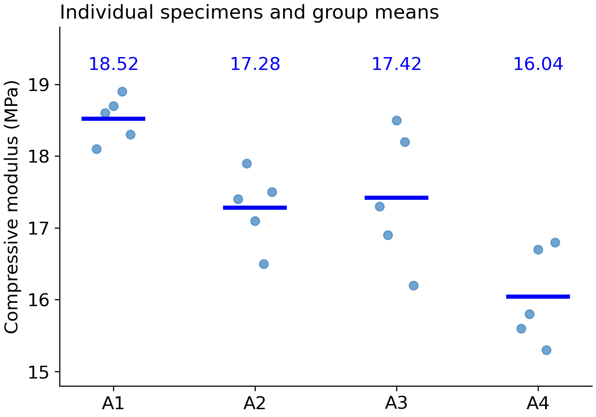
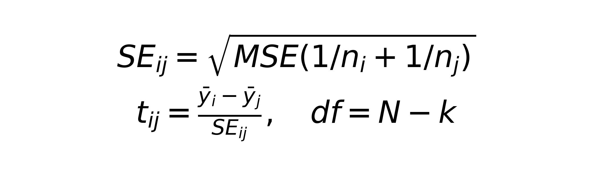
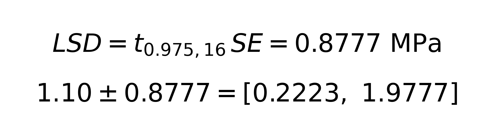
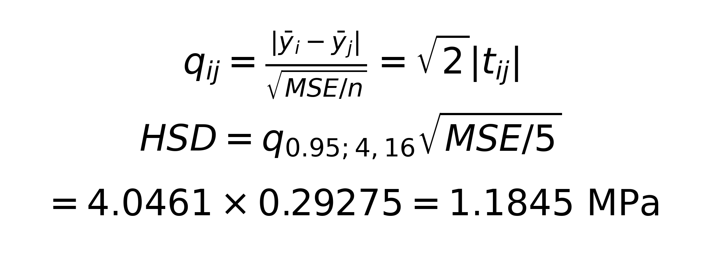
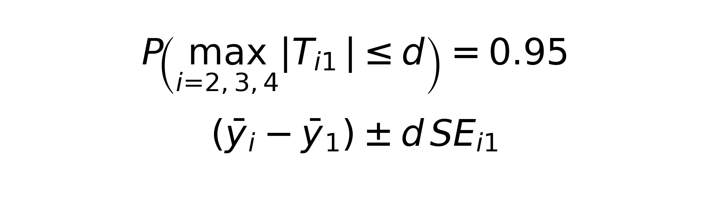
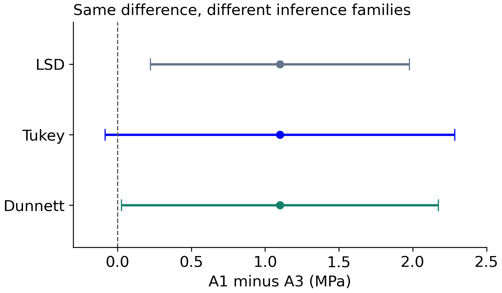
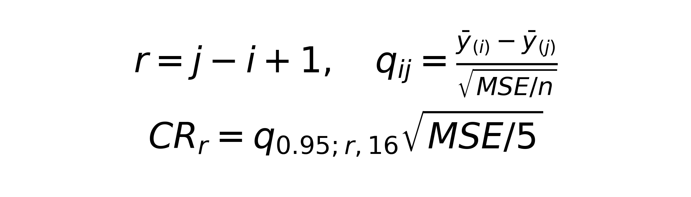

多组均数怎样比较？LSD、Tukey、Dunnett和SNK怎么选

modulus ~ group表示按结构组别解释压缩模量；fit保存完整模型。deviance(fit)读取组内平方和，df.residual(fit)读取误差自由度。d <- read.csv("data/scaffold.csv")
d$group <- factor(
d$group,
levels = c("A1", "A2", "A3", "A4")
)
fit <- aov(modulus ~ group, data = d)
mse <- deviance(fit) /
df.residual(fit)
c(MSE = mse, df = df.residual(fit))MSE df
0.4285 16.0000



TukeyHSD()读取完整模型，conf.level = .95规定整族同时置信水平。返回的diff是行名所示方向的差值，lwr、upr是同时区间端点，p adj是Tukey调整P[5]。TukeyHSD(
fit, "group", conf.level = .95
)

mcp(group = "Dunnett")生成其余各组减A1的比较。glht()把它们连到完整模型，summary()默认给出双侧、单步Dunnett调整P，confint()给出同时区间[8]。library(multcomp)
set.seed(20261130)
dun <- glht(
fit,
linfct = mcp(group = "Dunnett")
)
summary(dun)
confint(dun, level = .95)


scaffold.csv。任选一种，从读取数据开始逐节运行：先核对共同MSE，再看A1−A3的LSD/Tukey结果，随后核对Dunnett的共享对照相关性与SNK的三个包含区间。UNIT_SCALE改为1000，把MPa换成kPa。差值、SE和区间都会乘1000，而t、q、P和显著判断保持不变。它们标准化以后，为什么能消除单位变化？可以沿着输出重新解释一遍。article46_posthoc_selection/README.md，三种入口分别是：代码/posthoc_selection.R，打开本篇Rproj后按节运行。代码/posthoc_selection.py，在Spyder中从第1节开始。代码/posthoc_selection.m，先把Current Folder设为项目根。https://github.com/fuyuming/statistics-classroom/tree/main/stats_classroom/article46_posthoc_selection
https://github.com/fuyuming/statistics-classroom
https://github.com/fuyuming/statistics-classroom/archive/refs/heads/main.zip
stats_classroom/article46_posthoc_selection，先读README；也可以从本篇目录下载单独的三语练习项目ZIP。